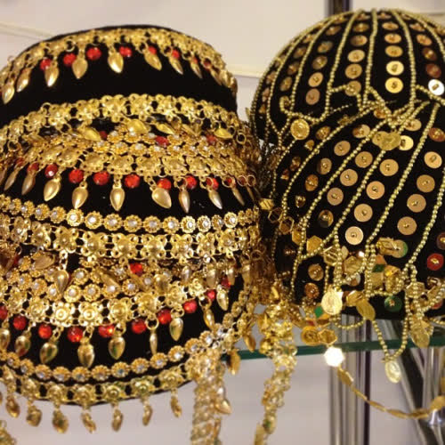
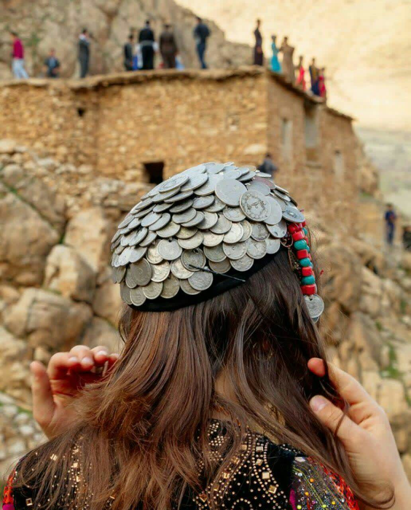
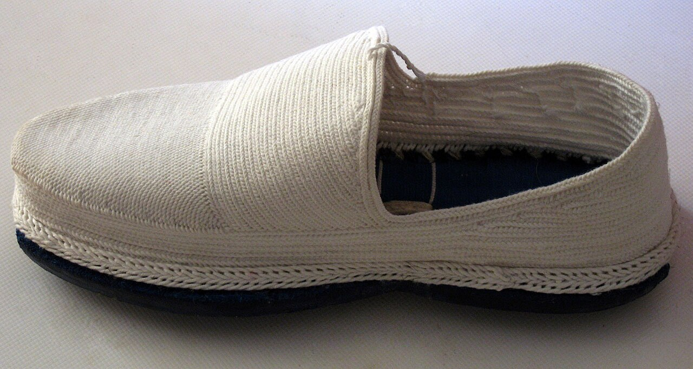

Kapak — Fotoğraf: Kurdirasti · CC BY-SA 4.0 · KaynaklarYöresel giyimde elbisenin kesimi kadar, onu tamamlayan parçalar da görünümü belirler. Bu rehberde şûtik (bel kuşağı), kofi (başlık) ve puşi gibi aksesuarların ne işe yaradığını, hangi kumaş ve ölçüde seçildiğini, adım adım nasıl bağlandığını ve hangi ortamda hangisinin daha rahat durduğunu bulacaksınız. El örgüsü çorap, heybe ve takı dengesi gibi tamamlayıcı ayrıntılara da yer verdik. Amaç süsü artırmak değil: birkaç parçayı doğru ölçü ve doğru sırayla kullanarak dengeli, taşınabilir bir görünüm kurmak.
Şûtik nedir, ne işe yarar?
Şûtik, belin çevresine birkaç tur dolanarak bağlanan uzun dokuma kuşaktır. Aynı anda iki iş görür: bol kesimli elbisenin fazlalığını belde toplayarak silueti tanımlar ve uzun süre ayakta durup oturup kalkarken bel bölgesine hafif bir destek verir. Dokuma kuşaklar genellikle 250-350 cm uzunluğunda ve 15-35 cm genişliğinde olur.
Doğru uzunluğu bulmak için pratik bir ölçü: bel çevrenizi üçle çarpın, üzerine 40-50 cm düğüm ve uç payı ekleyin. Örneğin 80 cm bel için 280-290 cm'lik bir kuşak çoğu bağlama stiline yeter. Kuşağı üç turdan az sararsanız gün içinde aşağı kayar; beş turu geçerseniz bel bölgesi hacimlenir ve kıras fistan gibi katmanlı elbiselerde oran bozulur.
Kumaşa göre şûtik seçimi
| Kumaş | Tipik genişlik | Tutuş | Uygun kullanım | Temizlik |
|---|---|---|---|---|
| El dokuma yün | 25-35 cm | Kalın, sıkı kavrar | Serin hava, açık hava kutlamaları | 30 °C elde, yünlü deterjanı |
| Pamuklu dokuma | 20-30 cm | Orta, nefes alır | Gündüz davetleri, uzun süreli kullanım | 30 °C hassas program |
| İpek karışımı | 15-25 cm | İnce, kaygan | Salon davetleri, kısa süreli | Kuru temizleme veya soğuk elde |
| Viskon/sentetik | 12-20 cm | Hafif, esnek | Modern kombinler, günlük | 30 °C, ütü düşük ısıda |
Adım adım şûtik bağlama
- Kuşağı uzunlamasına ikiye katlayın; 30 cm genişliğindeki bir dokuma böylece 15 cm bant hâline gelir ve bel çizgisine daha düzgün oturur.
- Orta noktasını bulun ve karın hizasına yerleştirin; iki ucu arkaya doğru götürün.
- Arkada çaprazlayıp öne getirin. Bu ilk tur, kuşağın gün boyu kaymasını engelleyen turdur; biraz sıkı olmalı ama nefesinizi kısmamalı.
- İkinci ve üçüncü turu, her turda 1-2 cm yukarı kaydırarak sarın. Hafif eğimli sarım bel çukurunu takip eder ve kırışmayı azaltır.
- Kalan uçları sol kalça hizasında düğümleyin, düğümü kuşağın katları arasına saklayın.
- Uçlar saçaklıysa 15-20 cm serbest bırakın; saçaksızsa tamamen içeri alın. Aynada yandan bakıp kuşağın alt hattının yere paralel olduğunu doğrulayın.
Sık yapılan üç hata: kuşağı göğüs altına kadar yukarı çekmek (boy kısaltır), tek turda bırakıp iğneyle tutturmak (kumaşı deler) ve elbise deseniyle aynı yoğunlukta desenli kuşak seçmek. Desenli bir elbisede düz veya tek renk ağırlıklı kuşak, iki parçanın da görünmesini sağlar.
Kofi: başlık çeşitleri ve takılışı
Kofi, başa oturan ve çoğunlukla çevresine bir eşarp ya da tülbent dolanan başlıktır. Yükseklik, ağırlık ve sarım biçimine göre görünüm belirgin şekilde değişir. Genel olarak üç tip görürsünüz:
- Alçak taban (3-5 cm): Günlük kullanıma en uygunu. Saç dibine oturur, boyun üzerinde ek yük bırakmaz.
- Orta yükseklik (6-9 cm): Davet ve kutlamalarda tercih edilir; üzerine sarılan tülbent hacmi 2-3 cm daha artırır.
- Yüksek ve süslemeli (10 cm üzeri): Pul, boncuk veya madenî parçalarla ağırlaşır. Fotoğraf ve kısa süreli kullanım için uygundur.
Adım adım kofi takma
- Saçı ense hizasında topuz yapın. Topuzu tepede değil, kofinin oturacağı hattın 2-3 cm altında konumlandırın; böylece başlık öne kaymaz.
- İnce bir bone veya pamuklu bant geçirin. Bu katman hem teri emer hem de başlığın kaymasını önler.
- Kofiyi alından itibaren yerleştirin. Kaş üstünden yaklaşık 3-4 cm yukarıda durması dengeli bir oran verir.
- İki yandan birer toka ile boneye sabitleyin; tokaları saça değil bone dokusuna takın.
- Tülbent veya eşarbı arkadan öne doğru sarın, uçları arkada birleştirip düğümleyin.
- Başınızı yavaşça sağa sola çevirin. Başlık sizinle birlikte dönüyorsa oturmuştur; gecikmeli hareket ediyorsa bir toka daha ekleyin.
Ağırlık, konfor ve saçla uyum
Süslemeli başlıklar çoğunlukla 150-400 gram arasında değişir. Uzun süreli kullanımda 250 gramın altını hedeflemek boyun yorgunluğunu belirgin şekilde azaltır. Dört saatten uzun bir davette, başlığı 90-120 dakikada bir birkaç dakikalığına gevşetmek iyi bir alışkanlıktır.
Saç bakımından pratik ölçü: ince telli saçlarda topuzun altına küçük bir hacim süngeri koymak başlığın kaymasını engeller; gür saçlarda ise topuzu mümkün olduğunca yassı tutmak gerekir, aksi hâlde kofi 1-2 cm yukarıda durur ve alından boşluk verir. Kâküllü saç kesimlerinde başlığın ön hattını kaşa yaklaştırmak yerine 1 cm geriye almak, alnın açık kalmasını sağlar.
Puşi bağlama stilleri
Puşi, kare veya dikdörtgen kesilmiş, çoğunlukla pamuklu ve saçaklı bir örtüdür. Tipik ölçüsü 100x100 cm ile 110x110 cm arasında değişir; ince dokuma olanlar daha kolay katlanır, kalın dokumalar daha hacimli durur. Ayrıntılı desen ve renk seçimleri için puşi sayfamıza göz atabilirsiniz.
Boyun sarımı (günlük, en pratik)
- Kareyi köşegen boyunca katlayarak üçgen yapın.
- Üçgenin uzun kenarını boynun önüne getirin, iki ucu arkaya alın.
- Arkada çaprazlayıp öne getirin ve gevşek bir düğüm atın.
- Üçgenin sivri ucunu düzelterek göğüs üzerine yayın; düğüm görünmesin diye ucun altına saklayın.
Baş sarımı (açık hava, güneş ve rüzgâr)
- Üçgeni başın üstüne, uzun kenar alın hizasında olacak şekilde koyun.
- Yan uçları çenenin altından geçirip enseye götürün.
- Ensede tek düğüm atın, uçları sarımın altına sıkıştırın.
- Alın hattını 1-2 cm geri çekerek yüzü açın; sıkı sarım baş ağrısı yapabilir, iki parmak boşluk bırakın.
Omuz atkısı (davet, şık duruş)
Puşiyi katlamadan tek omuza atıp karşı kolun altından geçirin ve kuşağın içine 10 cm kadar sıkıştırın. Bu stil, şal û şepik gibi ceketli takımlarda ceketin yaka hattını bozmadan renk katar.
El örgüsü çorap ve ayakkabı uyumu
El örgüsü yün çoraplar, geometrik desenleriyle görünümün en alt katmanını tamamlar. Yeni örülmüş yün çorap ilk yıkamada genellikle bir beden küçülür; bu yüzden çoğu usta bir numara büyük örer. Yıkarken 30 °C'yi aşmayın, sıcak-soğuk su geçişi yapmayın ve asla makinede sıkmayın; havluya sarıp bastırarak suyunu alın, sonra düz bir zeminde gölgede kurutun.
Ayakkabı tarafında sade, düz burunlu ve alçak topuklu modeller (3-5 cm) uzun kutlamalarda hem dengeli hem rahat olur. Desenli çorap kullanıyorsanız ayakkabıyı tek renk seçin; iki desenli parça ayak bileğinde görsel karışıklık yaratır.
Heybe ve çanta
Dokuma heybe, hem taşıma hem de görünümü tamamlama işlevi görür. Omuz askılı heybelerde askı boyunun 55-65 cm olması, çantanın kalça hizasında durmasını sağlar; daha uzun askı kuşağın hattını keser. Kilim dokuma heybeler ağır olduğu için içine 1 kilogramdan fazla yük koymamak, hem omuz hem de dokuma açısından daha sağlıklıdır. Küçük el çantaları ise takı sayısını azalttığınız sade kombinlerde odak noktası olarak kullanılabilir.
Takı dengesi: üç nokta kuralı
Altın ve gümüşü aynı kombinde kullanmak mümkün, ancak bir metali baskın tutmak gerekir: parçaların yaklaşık üçte ikisi tek metalden olsun, kalanı vurgu olarak kalsın. Vücutta üç odak bölgesi vardır: baş-kulak, boyun-göğüs, bilek-el.
Pratik kural: bu üç bölgeden en fazla ikisini belirgin takıyla doldurun, üçüncüsünü sade bırakın. Başlık zaten süslemeliyse küpeyi küçük tutun; ağır kolye taktıysanız bilekte tek ince bilezik yeterlidir.
Kuşak tokalı veya madenî işlemeliyse, o da bir odak sayılır ve bel bölgesi dördüncü nokta olarak devreye girer; bu durumda boyun bölgesini boş bırakmak dengeyi korur. Aksesuar çeşitleri ve eşleştirme örnekleri için aksesuar sayfamıza bakabilirsiniz.
Hangi ortamda hangi aksesuar?
| Ortam | Başlık | Kuşak | Takı yoğunluğu | Not |
|---|---|---|---|---|
| Kına gecesi | Orta-yüksek kofi, tülbentli | Geniş, desenli | Yüksek (2 odak) | Uzun süre için 250 g altı başlık seçin |
| Düğün / nişan salonu | Orta yükseklik | İpek karışımı, ince | Orta | Salon ısısı için pamuklu iç katman ekleyin |
| Gündüz aile daveti | Alçak taban veya tülbent | Pamuklu, 20-25 cm | Düşük | Sade küpe + tek bilezik yeterli |
| Açık hava / fotoğraf | Puşi baş sarımı | Yün, sıkı sarım | Orta | Rüzgârda saçaklar hareket eder, avantajdır |
| Bahar kutlamaları (Nevruz) | Hafif başlık | Canlı renk, orta genişlik | Orta | Yürüyüş ve dans için rahat ayakkabı |
| Günlük modern kombin | Yok | 12-20 cm ince kuşak | Düşük (1 odak) | Tek parça yöresel aksesuar en dengeli sonucu verir |
Bakım, temizlik ve saklama
- Yün kuşak ve çorap: 30 °C'yi geçmeyen suda, yünlü deterjanla elde yıkayın. 10 dakikadan uzun bekletmeyin, ovmayın.
- Pamuklu puşi: İlk yıkamada renk vermemesi için 1 litre suya 1 yemek kaşığı sirke ekleyip 20 dakika bekletmek yaygın bir yöntemdir.
- İşlemeli başlık: Yıkamayın. Yumuşak fırçayla tozunu alın, leke için nemli beze az miktarda sabun sürüp noktasal temizleyin.
- Ütü: Dokumaları doğrudan ütülemeyin; araya ince pamuklu bez koyup düşük ısıda (yün ayarı) bastırarak geçin.
- Saklama: Kuşakları asmak yerine gevşek şekilde rulo yapın; katlama izleri dokumada kalıcı olabilir. Başlıkları içi kâğıtla doldurup kutuda, nem almayan bir yerde tutun.
Aksesuarların elbiselerle nasıl eşleştiğine dair daha fazla içerik için blog bölümümüzü, sık sorulan konular için SSS sayfamızı inceleyebilirsiniz.
Kısa özet
Şûtikte doğru uzunluk ve üç tur sarım, kofide 250 gram sınırı ve iki noktadan sabitleme, puşide ortama göre sarım stili işin temelini oluşturur. Takıda üç odak bölgesinden en fazla ikisini doldurmak, aksesuarın giysiyi bastırmasını engeller. Bu birkaç ölçüyü akılda tutmak, hem daha rahat hem de daha dengeli bir görünüm için genellikle yeterlidir.
Sıkça Sorulan Sorular
Şûtik kaç metre olmalı?
Pratik ölçü, bel çevrenizi üçle çarpıp üzerine 40-50 cm düğüm payı eklemektir. 80 cm bel için yaklaşık 280-290 cm'lik bir kuşak çoğu bağlama stiline yeter. Piyasadaki dokuma kuşaklar genellikle 250-350 cm uzunluğunda olur.
Kofi başımdan kayıyor, ne yapmalıyım?
Önce saçı ense hizasında ve kofinin oturacağı hattın 2-3 cm altında topuz yapın, ardından ince bir bone geçirin. Tokaları saça değil bone dokusuna takın; iki yandan birer toka çoğu durumda yeterlidir. Başınızı çevirdiğinizde başlık sizinle aynı anda dönüyorsa doğru oturmuştur.
Puşiyi başa mı boyna mı bağlamak daha uygun?
Ortama göre değişir. Açık havada, güneş ve rüzgâr varsa üçgen katlayıp ense düğümüyle baş sarımı daha işlevseldir. Salon içi ve günlük kullanımda boyun sarımı ya da tek omuza atılan atkı stili daha rahat durur.
Altın ve gümüş takıyı bir arada kullanabilir miyim?
Kullanabilirsiniz, ancak bir metali baskın tutmak gerekir; parçaların yaklaşık üçte ikisi tek metalden olsun. Ayrıca baş-kulak, boyun-göğüs ve bilek-el bölgelerinden en fazla ikisini belirgin takıyla doldurun. Başlık süslemeliyse küpeyi küçük tutmak dengeyi korur.
El örgüsü yün çorap nasıl yıkanır?
30 °C'yi aşmayan suda yünlü deterjanla elde yıkayın, ovmayın ve makinede sıkmayın. Suyunu havluya sarıp bastırarak alın, düz bir zeminde gölgede kurutun. Yeni örülmüş çoraplar ilk yıkamada genellikle bir beden küçüldüğü için bir numara büyük seçmek yaygındır.
Modern bir kombine yöresel aksesuar nasıl eklenir?
Tek parçayla başlamak en dengeli sonucu verir: 12-20 cm genişliğinde ince bir kuşak ya da omuza atılan bir puşi çoğu sade kıyafetle uyum sağlar. Aksesuar sayısını artırmak yerine tek odak noktası bırakmak, görünümün dağılmasını önler.
Kültürden Kareler

